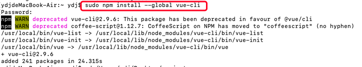
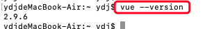
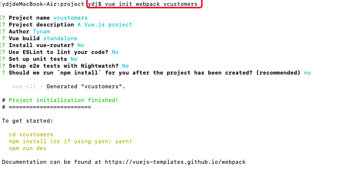
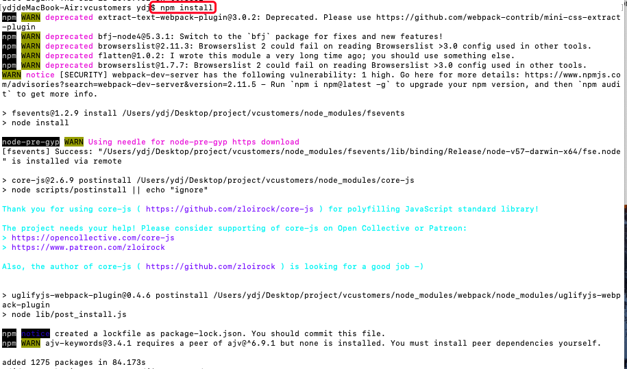
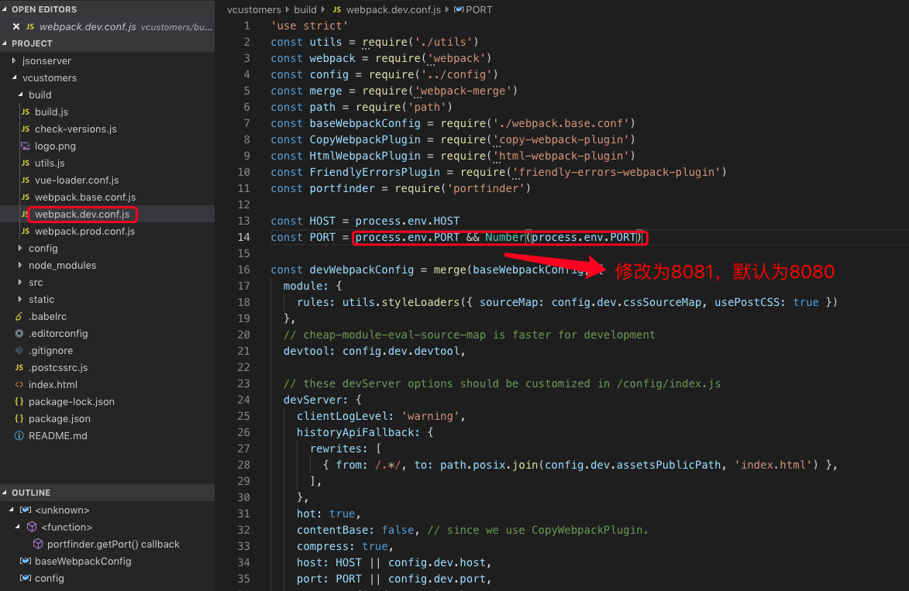
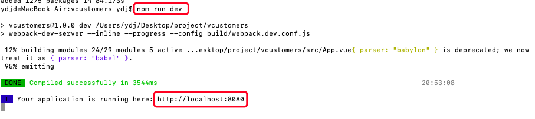
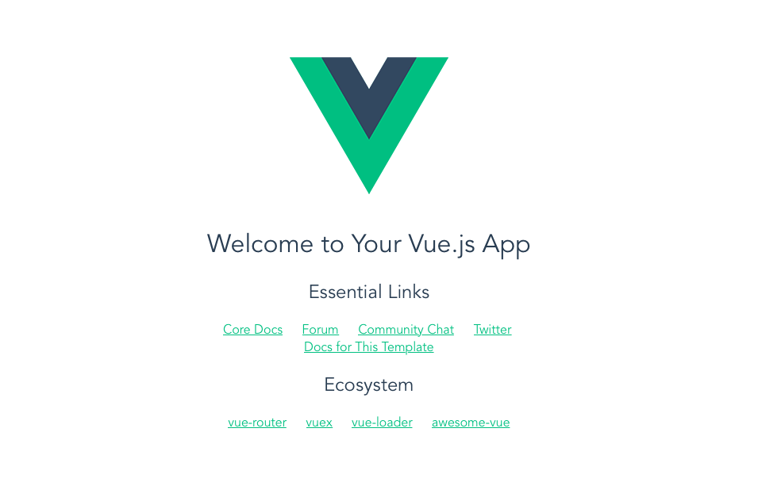

安装全局vue-cli
终端中执行：sudo npm install --global vue-cli
windows系统：npm install --global vue-cli

检查是否安装成功
终端中输入：vue --version

项目初始化
进入指定项目目录中
终端中输入：vue init webpack ”项目名称“
如果该目录下存在输入的项目名，则会提示： Target directory exists. Continue?
如下图，根据需要旋转是否安装 vue 相关的文件

进入到创建的 Project 中 进行 vue 相关的安装
cd 项目
执行：npm install

文件配置
修改端口号：port可以设置为自己想要的默认为8080，比如8081

启动项目
执行：npm run dev

运行后浏览器中打开：http://localhost:8080
